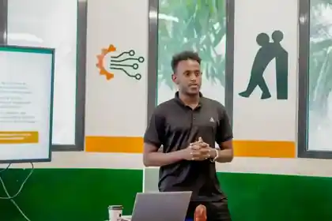
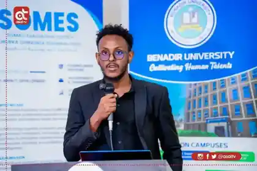

Data & Research
Survey design, KoboToolbox, Excel, R, Stata, statistical analysis, dashboards and research reporting.
Data analyst, AI & automation builder, innovation professional and Economics graduate working across research, digital products, training and business development.

My work moves between datasets, workshops, product ideas and real operations. I design research workflows, build digital systems, coordinate innovation programs and translate messy problems into structured solutions.
The goal is simple: make information clearer, processes faster and ideas more useful.
Survey design, KoboToolbox, Excel, R, Stata, statistical analysis, dashboards and research reporting.
AI assistants, workflow automation, QR attendance, automated communication and task-oriented digital systems.
Web applications, student platforms, ERP/POS workflows, prototyping and data-backed product design.
Training coordination, facilitation, partnerships, public speaking, entrepreneurship support and youth-focused programs.
I build, teach, coordinate and present.

Supporting practical innovation work at Benadir University Innovation Hub, where technology, research and experimentation meet.

Facilitating practical sessions around digital skills, research, AI and emerging technology for students and young professionals.

Speaking, coordinating and supporting partnership activities that connect academia, innovation and youth development.
A full student experience spanning protected dashboards, courses, attendance, fees, materials, quizzes, calendar, chat and an AI assistant, with an anatomy viewer and rich interactive UI.
A production-oriented retail operating system covering variant inventory, POS, supplier workflows, credit, returns, expenses, transfers, audit logs, reporting, fiscal controls and Excel migration.
An Innovation Hub-supported grain monitoring concept designed around storage conditions, early warning and actionable decision support for Somali agriculture.
Quantitative research workflows covering questionnaire design, field data operations, quality control, cleaning, descriptive analysis, reliability testing, regression, visualization and decision-ready reporting.
At Benadir University Innovation Hub, my work has included coordination, facilitation, event support, program operations and innovation development. The environment shaped how I work: practical, collaborative and impact-focused.
Completed a Bachelor of Economics at Benadir University and continued building across research, operations and innovation.
Supporting programs, events, partnerships, training operations and innovation initiatives inside a fast-moving university ecosystem.
Facilitating practical learning around AI-enhanced research, data analysis and digital capability for students and young professionals.
Contributing to youth-focused leadership and participation alongside professional work in innovation and development.
Alongside product and data work, I coordinate and facilitate learning programs, represent initiatives publicly, support partnerships and help translate strategy into well-run experiences.
Facilitating hands-on learning that helps students move from research questions and raw data to analysis, interpretation and practical digital workflows.
Supporting partnership activities and public communication around evaluation, learning, capacity development and institutional collaboration.
Youth-focused leadership, participation and initiative building alongside professional work in innovation and development.
Completed Training of Trainers work focused on youth business incubation, entrepreneurship support and practical program delivery.
Coordinating participant journeys, communication, materials, attendance, facilitation support and follow-up for university and partner programs.
My background in economics gives me a strong analytical lens. My work in data, technology and innovation lets me turn that lens into practical systems, research and programs.
I’m interested in strong roles, consulting work, research collaborations and technology projects where execution matters.